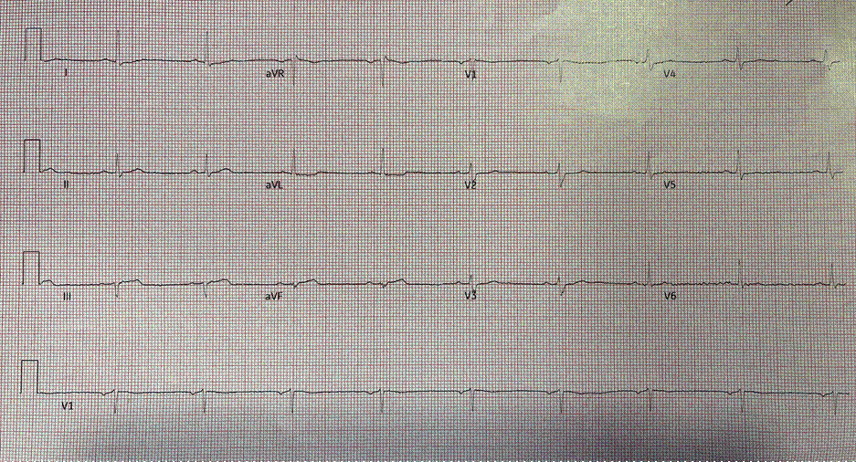
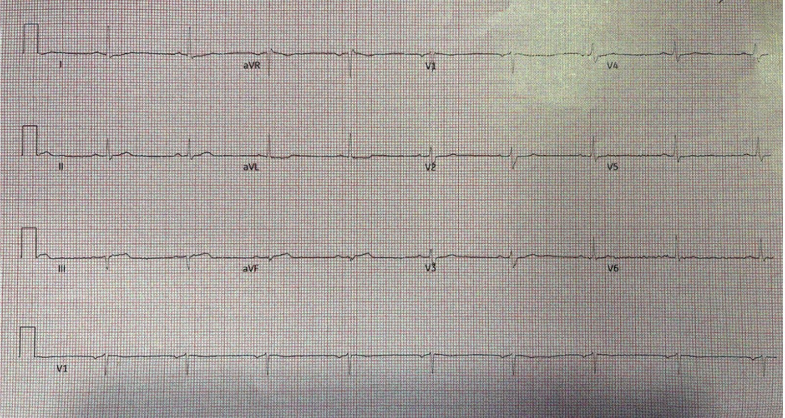
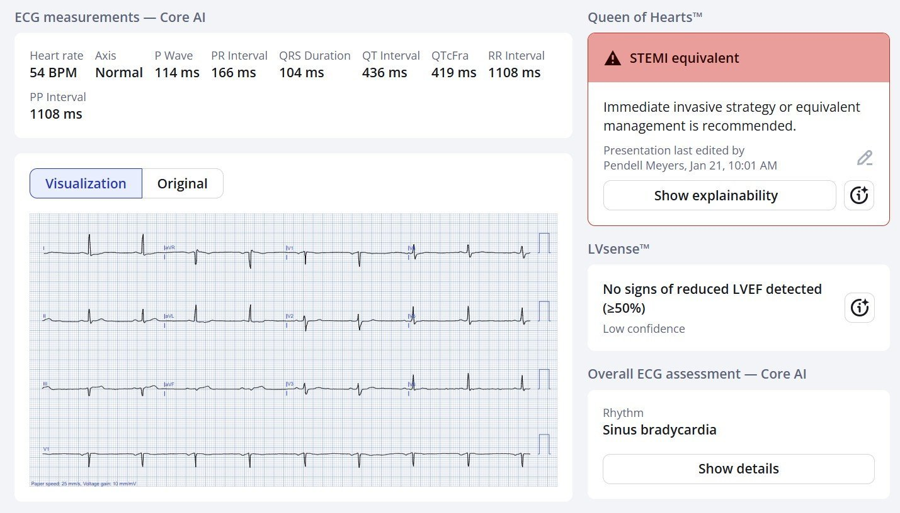
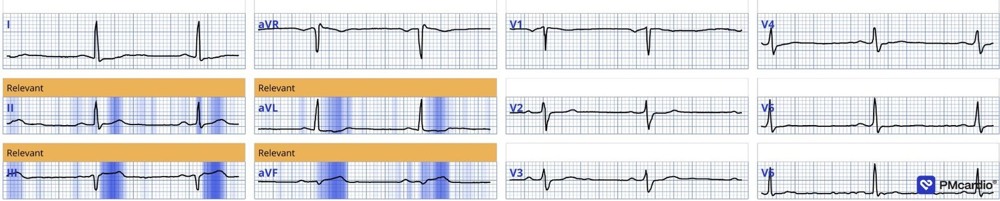
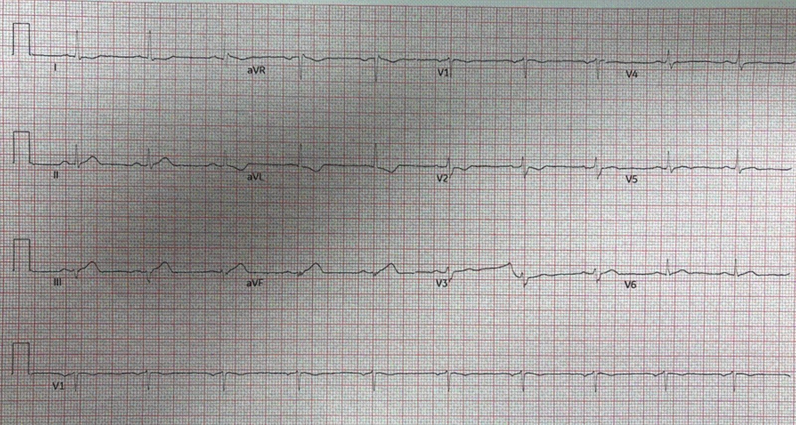
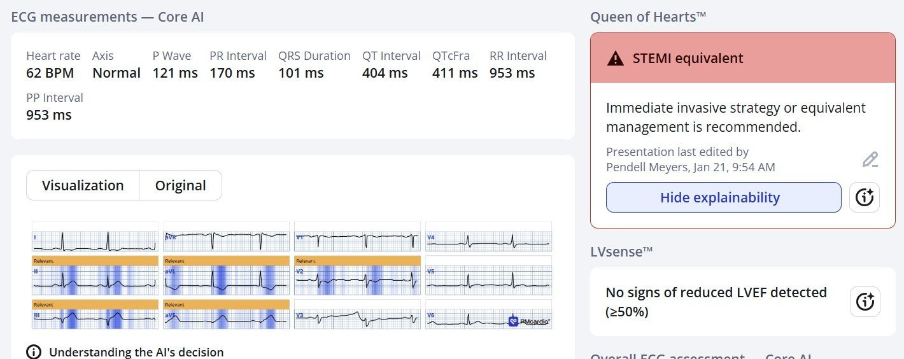
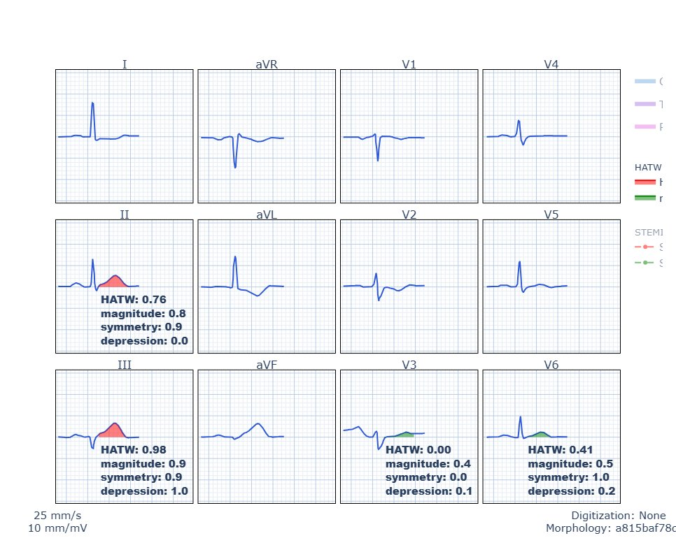
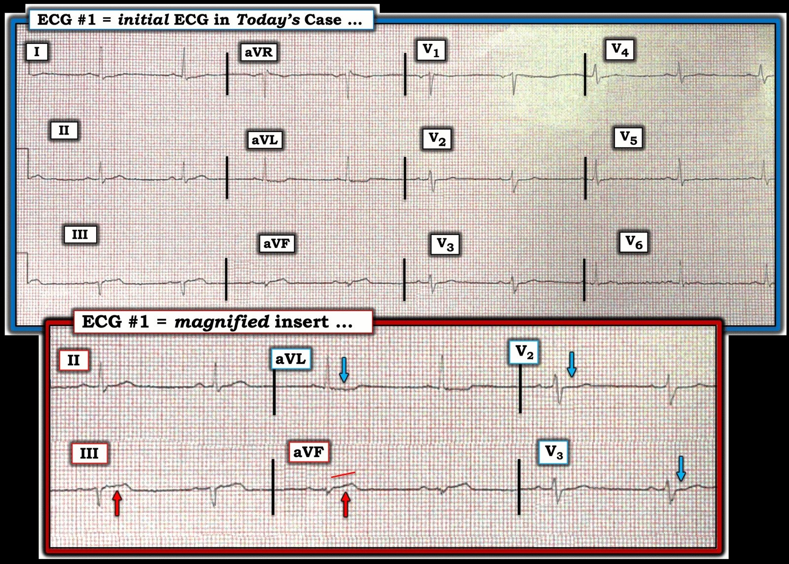

26/01/2026 — Một người đàn ông độ tuổi 60 bị đau ngực. Những sóng T rất nhỏ này có phải là sóng T tối cấp?
Bản dịch tiếng Việt của bài "A man in his 60s with chest pain. Are these very small T-waves hyperacute?" – Dr. Smith’s ECG Blog. Giữ nguyên toàn bộ 7 hình ảnh của bản gốc.


Gửi bởi một người giấu tên, viết bởi Pendell Meyers
Một người đàn ông ở độ tuổi 60 xuất hiện đột ngột đau ngực, chóng mặt, vã mồ hôi và khó thở ngay trước khi đến khoa cấp cứu (ED).
Điện tâm đồ lúc phân loại (triage):


Bệnh nhân có nhiều yếu tố nguy cơ và đã từng can thiệp mạch vành qua da (PCI) từ lâu.
Điện tâm đồ này được so sánh với bản trước đó (không trình bày ở đây) và cho thấy ST chênh lên (STE) ở III và aVF kèm ST chênh xuống (STD) soi gương ở aVL, sóng T tối cấp (HATW) to và rộng không tương xứng ở III và aVF, cùng đoạn ST dẹt ở V2-V2, gợi ý nhồi máu cơ tim do tắc (OMI) thành dưới và thành sau.
Smith: Hãy để ý rằng các sóng T tối cấp này có biên độ dưới 2 mm!! Đó là vì HATW không được định nghĩa bằng biên độ; chúng được định nghĩa bằng 1) DIỆN TÍCH DƯỚI ĐƯỜNG CONG SO VỚI biên độ QRS và 2) tính ĐỐI XỨNG cao hơn. Chúng tôi vừa công bố bằng chứng cho quan niệm của chúng tôi về HATW.
Smith: điện tâm đồ này có giá trị chẩn đoán OMI thành dưới/thành sau dù ST gần như không chênh lên chút nào. Đoạn ST không chênh xuống ở V2-4, nhưng chúng đẳng điện và rất dẹt. Bình thường đoạn ST ở V2-3 phải chênh lên, đó là lý do tiêu chuẩn STEMI cho phép RẤT NHIỀU STE ở các chuyển đạo này. Khi chúng đẳng điện, cần nghi ngờ mạnh rằng chúng đang chênh xuống MỘT CÁCH TƯƠNG ĐỐI.
Chúng tôi không thể chạy thuật toán HATW trên điện tâm đồ này vì biên độ QRS ở chuyển đạo aVF thấp hơn ngưỡng cho phép sử dụng thuật toán.
Đây là kết quả đọc của Queen of Hearts:




Kết quả dạng số là 0,99. Nghĩa là Queen gần như chắc chắn 100% đây là OMI. Ở giá trị số trong khoảng 0,67 đến 0,84, độ đặc hiệu là 98%. Queen of Hearts nhìn thấy các sóng T tối cấp này.
Ứng dụng PMcardio for Individuals 3.0 mới nay đã có mô hình Queen of Hearts mới nhất và khả năng giải thích của AI (bản đồ nhiệt màu xanh lam)! Tải ngay cho iOS hoặc Android. https://www.powerfulmedical.com/pmcardio-individuals/ (BS. Smith và BS. Meyers đã huấn luyện mô hình AI và là cổ đông của Powerful Medical). Là thành viên cộng đồng của chúng tôi, bạn có thể dùng mã DRSMITH20 để được giảm 20% độc quyền cho năm đầu tiên của gói thuê bao năm. Tuyên bố miễn trừ: Một số mô-đun AI ECG là thiết bị y tế có dấu CE theo EU MDR và chỉ được chứng nhận lưu hành tại Liên minh châu Âu và Vương quốc Anh. Công nghệ PMcardio chưa được Cục Quản lý Thực phẩm và Dược phẩm Hoa Kỳ (FDA) cho phép sử dụng lâm sàng tại Hoa Kỳ.
Ca bệnh tiếp diễn: Bệnh nhân được chuyển tới một trung tâm PCI lân cận, dù nhóm tim mạch cho rằng ca này không đủ tiêu chuẩn kích hoạt. Chúng tôi nhắc lại nhận định của mình và trao đổi rằng ca này thực sự đạt tiêu chuẩn theo Lộ trình Quyết định Đồng thuận Chuyên gia ACC 2022 (ECDP) về đau ngực tại khoa cấp cứu, vì có HATW.
Bác sĩ tim mạch một lần nữa từ chối, và nói rõ rằng kế hoạch là chỉ chuyển bệnh nhân tới bệnh viện tiếp nhận nếu điện tâm đồ của ông “tiến triển thành STEMI”.
Ngay sau đó, một điện tâm đồ ghi lại được thực hiện 20 phút sau (bên dưới) cho thấy diễn tiến đúng như dự đoán, và điều này giúp bệnh nhân được chấp nhận để làm PCI cấp cứu (dù thực tế vẫn chưa đạt tiêu chuẩn STEMI).


Đối với QOH, bản này cũng dễ như điện tâm đồ #1:


Dưới đây bạn có thể thấy công thức HATW khách quan, tự động của chúng tôi được áp dụng cho điện tâm đồ này, cho thấy các chuyển đạo II, III và aVF đều có HATW một cách khách quan. Tiếc là chuyển đạo aVF không có điện thế QRS đủ để đạt tiêu chuẩn đưa vào đã dùng trong quy trình gốc, vì vậy hệ thống hiển thị được lập trình để không hiện các con số HATW cho chuyển đạo đó, nhưng sóng T rõ ràng cũng tối cấp như ở chuyển đạo III, thậm chí còn hơn.


“Độ lớn (Magnitude)” là thước đo AUC/QRS. Độ đối xứng (Symmetry) là thước đo đoạn từ điểm J đến đỉnh sóng T so với đoạn từ đỉnh sóng T đến cuối sóng T.
Chụp mạch vành cho thấy tắc RCA kèm hẹp nặng LCX, cả hai đều đã được can thiệp.
Không có thêm thông tin theo dõi.
Tóm tắt:
Đây là một ca rất hay cho thấy ứng dụng Queen of Hearts có thể giúp nhận diện đúng các dấu hiệu OMI kín đáo. Điện tâm đồ lúc phân loại cho thấy HATW ở III và aVF, với đoạn ST dốc xuống ở chuyển đạo soi gương aVL. Ngoài ra, V2-V3 cho thấy đoạn ST dẹt hơn, điều này rõ hơn trên bản ghi lại và phù hợp với tắc RCA cấp.
= = =
======================================
BÌNH LUẬN CỦA TÔI, bởi KEN GRAUER, MD (26/1/2026):
“Hình dạng quan trọng hơn Độ lớn!” Đó là chủ đề của ca hôm nay. Chính vì nhóm tim mạch đã bỏ qua nguyên lý cơ bản này của việc đọc điện tâm đồ — mà việc thông tim bị trì hoãn.
- May mắn cho bệnh nhân — sự trì hoãn do nhóm tim mạch cho rằng “Điện tâm đồ ban đầu không đạt tiêu chuẩn STEMI” chỉ kéo dài 20 phút.
- Nhưng không may cho bệnh nhân — trong 20 phút trì hoãn này, ổ nhồi máu đã tiến triển đáng kể (điện tâm đồ ghi lại giờ đã cho thấy các thay đổi cấp tính rõ ràng).
- Điểm MẤU CHỐT: Như BS. Meyers và BS. Smith đã nêu, ca này là một ví dụ sâu sắc cho thấy sóng T có thể nhỏ xíu đến mức nào — mà vẫn đủ tiêu chuẩn là tối cấp!
= = =
Vì sao Điện thế lại Thấp như vậy?
Điều quan trọng là phải biết VÌ SAO điện thế lại thấp như vậy khi phân tích ca hôm nay. Đó là vì nhiều nguyên nhân thường gặp gây Điện thế Thấp có thể phù hợp với triệu chứng khởi phát của bệnh nhân này (là đau ngực khởi phát đột ngột — chóng mặt — và khó thở).
- Đặc biệt liên quan đến chẩn đoán cuối cùng của ca hôm nay (là tắc RCA cấp ở một bệnh nhân bệnh nhiều nhánh mạch vành) — là “choáng” cơ tim (myocardial stunning) do một ổ nhồi máu cấp diện rộng.
- Chính vì lý do này mà chúng tôi đã đặt phần ôn tập Các nguyên nhân gây Điện thế thấp sẵn ở Menu TRÊN CÙNG của mọi trang trong Dr. Smith’s ECG Blog (BẤM VÀO ĐÂY — có minh họa cách tìm đường link này ở cuối trang).
===
Điện thế Nhỏ — nhưng OMI cấp lẽ ra phải Rõ ràng!
3 yếu tố quan trọng nhất trong bất động sản là:
- #1) Vị trí;
- #2) Vị trí;
- #3) Vị trí.
- #2) Vị trí;
= = =
Khi đọc điện tâm đồ để phát hiện OMI cấp — Danh sách 3 yếu tố MẤU CHỐT của tôi là:
- #1) Bối cảnh lâm sàng;
- #2) Hình dạng;
- #3) Tính tương xứng (proportionality).
- — LƯU Ý: “Kích thước” không nằm trong Top 3 của tôi …
- #3) Tính tương xứng (proportionality).
- #2) Hình dạng;
= = =
Để xem xét vai trò của các Yếu tố MẤU CHỐT của tôi đối với ca hôm nay — Hãy cân nhắc những điều sau:
- Bối cảnh lâm sàng: Bệnh nhân hôm nay là một người đàn ông ở độ tuổi 60 đã biết có bệnh mạch vành (đã PCI từ lâu) — nay đến khám vì CP (đau ngực) mới khởi phát — kèm chóng mặt, vã mồ hôi và khó thở. Tuổi và tiền sử lâm sàng của bệnh nhân này ngay lập tức xếp ông vào nhóm nguy cơ cao hơn bị một biến cố tim cấp.
Bây giờ hãy xem Hình 1 — trong đó tôi đã tái hiện điện tâm đồ ban đầu của bệnh nhân này (kèm một ô phóng to các chuyển đạo MẤU CHỐT).
- Nhịp trong Hình 1 là nhịp chậm xoang khoảng ~55 lần/phút. Các khoảng (PR-QRS-QTc) bình thường. Trục mặt phẳng trán hơi lệch trái — nhưng chưa đủ để xếp là LAHB. Không có lớn buồng tim.
- Hình dạng của đoạn khởi đầu ST ở các chuyển đạo III và aVF rõ ràng bất thường (thẳng đuỗn).
- Mặc dù mức ST chênh lên thực tế ở chuyển đạo III và aVF rất nhỏ — nhưng theo nguyên lý Tương xứng (Proportionality) — sóng ST-T ở cả hai chuyển đạo này rõ ràng là tối cấp (“đồ sộ” hơn nhiều và chân rộng hơn nhiều so với dự kiến khi xét kích thước nhỏ xíu của QRS ở các chuyển đạo này).
- Ở người đàn ông độ tuổi 60 có CP mới này — sự xác nhận rằng các sóng ST-T ở chuyển đạo III và aVF là cấp tính đến từ hình ảnh gần như soi gương của ST chênh xuống soi gương ở chuyển đạo aVL (so với đoạn ST thẳng đuỗn và chênh lên kín đáo mà ta thấy ở chuyển đạo III).
- Bằng chứng ủng hộ thêm cho OMI thành dưới cấp — đến từ hình dạng sóng ST-T ở các chuyển đạo V2 và V3 (các mũi tên XANH LAM ở các chuyển đạo này chỉ đoạn ST dẹt dạng bậc thềm — thay vì đoạn ST hơi chênh lên, dốc lên thoai thoải lẽ ra thường thấy ở các chuyển đạo này). Hình dạng không phù hợp này của các sóng ST-T, trong đó bất thường tối đa thấy ở V2,V3 — cho thấy có kèm OMI thành sau .
ĐIỀU CỐT LÕI: Ngay cả trước khi có kết quả Troponin huyết thanh — ở người đàn ông độ tuổi 60 có CP mới khởi phát này — vị trí các thay đổi sóng ST-T ở 6 chuyển đạo trong ô phóng to của Hình 1 — có giá trị chẩn đoán OMI dưới-sau cấp cho đến khi chứng minh được điều ngược lại! (nhiều khả năng do tắc RCA cấp — vì ST chênh lên ở chuyển đạo III>chuyển đạo II ).
- T.B. (P.S.): Có vẻ có sóng QS ở chuyển đạo III. Tôi nghi có một dao động dương ban đầu (sóng r) ở chuyển đạo aVF. Những dấu hiệu này phản ánh một OMI thành dưới cũ — hay là một phần của biến cố cấp đang tiến triển, thì không chắc chắn được từ một bản ghi đơn lẻ này.
- Suy nghĩ cuối cùng: Hình dạng quan trọng hơn độ lớn. Khi đánh giá khả năng OMI cấp ở một ca cụ thể — cần nhấn mạnh MẤU CHỐT vào: i) Bối cảnh lâm sàng; — và các yếu tố điện tâm đồ gồm — ii) Hình dạng; — và, iii) Tính tương xứng.
= = =
Hình 1: Tôi đã tái hiện điện tâm đồ ban đầu của ca hôm nay — kèm một ô phóng to các chuyển đạo MẤU CHỐT . Dù kích thước nhỏ — các dấu hiệu điện tâm đồ có giá trị chẩn đoán vẫn có ở đây.


= = =
= = =